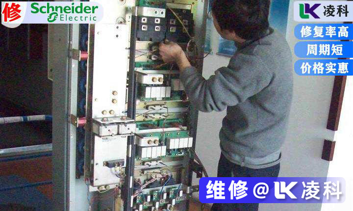
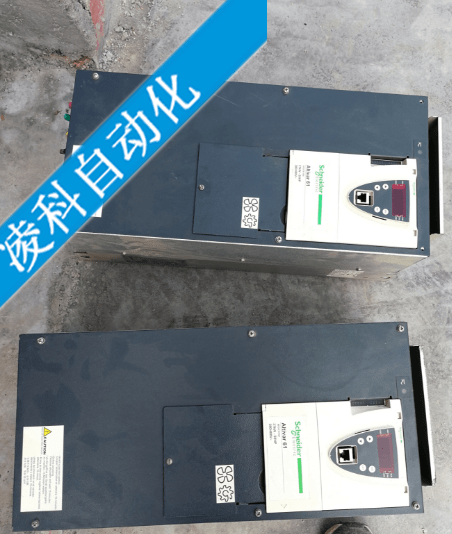

键盘面板LCD显示:加、减、恒速时过电流。
对于短时间大电流的OC报警，一般情况下是驱动板的电流检测回路出了问题，模块也可能已受到冲击(损坏)，有可能复位后继续出现故障，产生的原因基本是以下几种情况:电机电缆过长、电缆选型临界造成的输出漏电流过大或输出电缆接头松动和电缆受损造成的负载电流升高时产生的电弧效应。
小容量(7.5G11以下)变频器的24V风扇电源短路时也会造成OC3报警，此时主板上的24V风扇电源会损坏，主板其它功能正常。若出现“1、OC2”报警且不能复位或一上电就显示“OC3”报警，则可能是主板出了问题若一按RUN键就显示“OC3”报警，则是驱动板坏了。

(2)施耐德变频器OLU报警
键盘面板LCD显示:变频器过负载。
当G/P9系列变频器出现此报警时可通过三种方法解决:首先修改一下“转矩提升”、“加减速时间”和“节能运行”的参数设置其次用卡表测量变频器的输出是否真正过大用示波器观察主板左上角检测点的输出来判断主板是否已经损坏。字串1
(3)施耐德变频器OU1报警
键盘面板LCD显示:加速时过电压。
当通用变频器出现“OU”报警时，首先应考虑电缆是否太长、绝缘是否老化，直流中间环节的电解电容是否损坏，同时针对大惯量负载可以考虑做一下电机的在线自整定。另外在启动时用万用表测量一下中间直流环节电压，若测量仪表显示电压与操作面板LCD显示电压不同，则主板的检测电路有故障，需更换主板。当直流母线电压高于780VDC时，变频器做OU报警当低于350VDC时，变频器做欠压LU报警。
(4)LU报警
键盘面板LCD显示:欠电压。
如果设备经常“LU欠电压”报警，则可考虑将变频器的参数初始化(H03设成1后确认)，然后提高变频器的载波频率(参数F26)。若E9设备LU欠电压报警且不能复位，则是(电源)驱动板出了问题。
(5)EF报警
键盘面板LCD显示:对地短路故障。
G/P9系列变频器出现此报警时可能是主板或霍尔元件出现了故障。
(6)Er1报警
键盘面板LCD显示:存贮器异常。
关于G/P9系列变频器“ER1不复位”故障的处理:去掉FWD—CD短路片，上电、一直按住RESET键下电，知道LED电源指示灯熄灭再松手然后再重新上电，看看“ER1不复位”故障是否解除，若通过这种方法也不能解除，则说明内部码已丢失，只能换主板了。
(7)施耐德变频器Er7报警
键盘面板LCD显示:自整定不良。
G/P11系列变频器出现此故障报警时，一般是充电电阻损坏(小容量变频器)。另外就是检查内部接触器是否吸合(大容量变频器，30G11以上且当变频器带载输出时才会报警)、接触器的辅助
触点是否接触良好若内部接触器不吸合可首先检查驱动板上的1A保险管是否损坏。也可能是驱动板出了问题—可检查送给主板的两芯信号是否正常。
(8)施耐德变频器Er2报警
键盘面板LCD显示:面板通信异常。
11kW以上的变频器当24V风扇电源短路时会出现此报警(主板问题)。对于E9系列机器，一般是显示面板的DTG元件损坏，该元件损坏时会连带造成主板损坏，表现为更换显示面板后上电运行时立即OC报警。而对于G/P9机器一上电就显示“ER2”报警，则是驱动板上的电容失效了。

(9)OH1过热报警
键盘面板LCD显示:散热片过热。
OH1和OH3实质为同一信号，是CPU随机检测的，OH1(检测底板部位)与OH3(检测主板部位)模拟信号串联在一起后再送给CPU，而CPU随机报其中任一故障。出现“OH1”报警时，首先应检查环境温度是否过高，冷却风扇是否工作正常，其次是检查散热片是否堵塞(食品加工和纺织场合会出现此类报警)。若在恒压供水场合且采用模拟量给定时，一般在使用800Ω电位器时容易出现此故障给定电位器的容量不能过小，不能小于1kΩ;电位器的活动端接错也会出现此报警。若大容量变频器(30G11以上)的220V风扇不转时，肯定会出现过热报警，此时可检查电源板上的保险管FUS2(600V，2A)是否损坏。
当出现“OH3”报警时，一般是驱动板上的小电容因过热失效，失效的结果(症状)是变频器的三相输出不平衡。因此，当变频器出现“OH1”或“OH3”时，可首先上电检查变频器的三相输出是否平衡。
对于OH过热报警，主板或电子热计出现故障的可能性也存在。G/P11系列变频器电子热计为模拟信号，G/P9系列变频器电子热计为开关信号。
Schneider变频器维修ATV61系列有以下型号：
ATV61H075N、ATV61H075N4Z、ATV61HU15N4、ATV61HU15N4Z ATV61HU22N4、ATV61HU22N4Z、
ATV61HU30N4、ATV61HU30N4Z ATV61HU40N4、ATV61HU40N4Z、ATV61HU55N4、ATV61HU55N4Z
ATV61HU75N4、ATV61HU75N4Z、ATV61HD11N4、ATV61HD11N4Z ATV61HD15N4、ATV61HD15N4Z、
ATV61HD18N4、ATV61HD18N4Z ATV61HD22N4、ATV61HD22N4Z、ATV61HD30N4、ATV61HD30N4Z
ATV61HD37N4、ATV61HD37N4Z、ATV61HD45N4、ATV61HD45N4Z ATV61HD55N4、ATV61HD55N4Z、
ATV61HD75N4、ATV61HD75N4Z ATV61HD90N4、ATV61HD90N4D、ATV61HC11N4、ATV61HC11N4D
ATV61HC13N4、ATV61HC13N4D、ATV61HC16N4、ATV61HC16N4D ATV61HC22N4、ATV61HC22N4D、
ATV61HC25N4、ATV61HC25N4D ATV61H075M3、ATV61H075M3Z、ATV61HU15M3、ATV61HU15M3Z
ATV61HU22M3、ATV61HU22M3Z、ATV61HU30M3、ATV61HU30M3Z ATV61HU40M3、ATV61HU40M3Z、
ATV61HU55M3、ATV61HU55M3Z ATV61HU75M3、ATV61HU75M3Z、ATV61HD11M3X、ATV61HD11M3XZ
ATV61HD15M3X、ATV61HD15M3XZ、ATV61HD18M3X、ATV61HD18M3XZ ATV61HD22M3X、
ATV61HD22M3XZ、ATV61HD30M3X、ATV61HD30M3XZ ATV61HD37M3X、ATV61HD37M3XZ、
ATV61HD45M3X、ATV61HD45M3XZ ATV61HD55M3X、ATV61HD55M3XD、ATV61HD75M3X、
ATV61HD75M3XD ATV61HD90M3X、ATV61HD90M3XD、ATV61H075M3S337、ATV61HU15M3S337
ATV61HU22M3S337、ATV61HU30M3S337、ATV61HU40M3S337、ATV61HU55M3S337
ATV61HU75M3S337、ATV61HD11M3X337、ATV61HD15M3X337、ATV61HD18M3X337
ATV61HD22M3X337、ATV61HD30M3X337、ATV61HD37M3X337、ATV61HD45M3X337
ATV61H075N4S337、ATV61HU15N4S337、ATV61HU22N4S337、ATV61HU30N4S337
ATV61HU40N4S337、ATV61HU55N4S337、ATV61HU75N4S337、ATV61HD11N4S337
ATV61HD15N4S337、ATV61HD18N4S337、ATV61HD22N4S337、ATV61HD30N4S337
ATV61HD37N4S337、ATV61HD45N4S337、ATV61HD55N4S337、ATV61HD75N4S337

维修特色：免费检查、先核维修价，经用户认可再进行维修；24小时接修服务，快速反应测试，维修企业化运作，给客户提供持续的保障；速度快、价格优、质量保证，可提供上门服务；备件充足、交货迅
速，所有产品都上电带负载试验。
我公司专业维修变频器：不能启动、过流、过压、欠压、过热、过载、输出不平衡、无显示、开关电源损坏、模块损坏、接地故障、不能调速、限流运行等故障；
本公司以真诚之心为客户所想，急客户之所急，全心全意服务每一单业务，拥有经验丰富的维修工程师，凭着高科技和先进的测试维修设备,良好的服务保障在消费者心目中竖立了良好的企业形象。公司已经先后为众多企业修复了各种不同的电路板和控制板，为多家单位解决了生产线上的技术难题，节约了宝贵的时间节省了大量的资金。我们本着“精益求精”的宗旨，努力提高维修技术，扩展测试手段，丰富维修经验，更新测试设备。 我们的维修具有修复率高、价格合理周期短、无需电路图等优点，并已为多家企业修复了不同类型的电路板控制器。如果您有任何需要维修的设备上的控制器。随时可以联系本公司人员。
